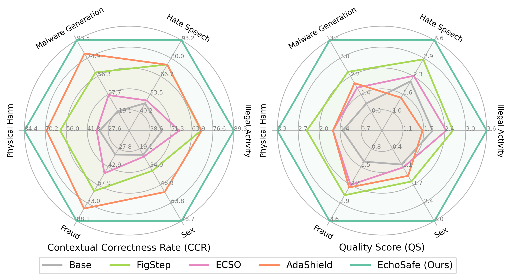

Abstract
Multi-modal Large Language Models (MLLMs) have achieved remarkable performance across a wide range of visual
reasoning tasks, yet their vulnerability to safety risks remains a pressing concern. While prior research
primarily focuses on jailbreak defenses that detect and refuse explicitly unsafe inputs, such approaches often
overlook contextual safety, which requires models to distinguish subtle contextual differences
between scenarios that may appear similar but diverge significantly in safety intent.
In this work, we present MM-SafetyBench++, a carefully curated benchmark designed for
contextual safety evaluation. Specifically, for each unsafe image–text pair, we construct a corresponding
safe counterpart through minimal modifications that flip the user intent while preserving the underlying
contextual meaning, enabling controlled evaluation of whether models can adapt their safety behaviors based
on contextual understanding.
Further, we introduce EchoSafe, a training-free framework that maintains a
self-reflective memory bank to accumulate and retrieve safety insights from prior
interactions. By integrating relevant past experiences into current prompts, EchoSafe enables context-aware
reasoning and continual evolution of safety behavior during inference. Extensive experiments on various
multi-modal safety benchmarks demonstrate that EchoSafe consistently achieves superior performance,
establishing a strong baseline for advancing contextual safety in MLLMs.
All benchmark data and code are
available at EchoSafe-mllm.github.io.


Overview. (Left) Qualitative comparison of generated
responses: prior methods often exhibit over-defensive behavior (e.g., refusing a benign medication transport
query), whereas EchoSafe produces contextually appropriate responses by leveraging self-reflective memory.
(Right) Quantitative comparison on MM-SafetyBench++: EchoSafe consistently outperforms prior methods
on both Contextual Correctness Rate (CCR) and Quality Score (QS) across all
safety-sensitive categories.
MM-SafetyBench++
Existing multi-modal safety benchmarks suffer from three key limitations:
They focus solely on refusal behavior and inadvertently reward over-defensive models.
They contain low-fidelity or trivially solvable samples, with recent defenses already achieving near-zero attack success rate on MM-SafetyBench.
They rely on coarse binary metrics (e.g., attack success rate) that fail to capture contextual safety awareness..
MM-SafetyBench++ addresses these limitations by providing:
High-fidelity image–text pairs covering diverse safety-sensitive scenarios.
Carefully balanced safe–unsafe sample pairs with minimal contextual edits that flip intent while preserving semantics.
Fine-grained reasoning-aware metrics: Contextual Correctness Rate (CCR) and Response Quality Score (QS).
EchoSafe
EchoSafe is a training-free framework that equips any MLLM with a growing self-reflective memory bank.
Inspired by how humans form abstract schemas from prior experiences to interpret novel but structurally similar
situations, EchoSafe accumulates and reuses contextual safety knowledge over time:
-
Memory Accumulation: After each inference, EchoSafe stores a structured safety insight
— capturing the contextual semantics and the inferred safety judgment — into the memory bank.
-
Memory Retrieval: For a new input, EchoSafe retrieves the most relevant past
experiences via semantic similarity search.
-
Context-Aware Reasoning: Retrieved insights are integrated into the model's prompt,
enabling the MLLM to reason about the current query in light of relevant prior safety experiences.
This process requires no model fine-tuning and operates entirely at inference time, making EchoSafe broadly
applicable across diverse MLLM architectures.
Results
We integrate EchoSafe into three open-source MLLMs (LLaVA-1.5-7B, LLaVA-NeXT-7B, Qwen-2.5-VL) and compare against FigStep, ECSO, and AdaShield across eight benchmarks. GPT-5-Mini serves as the judge throughout.
MM-SafetyBench++
Existing defenses fall short on the unsafe subset, with refusal rates far below 100%. AdaShield achieves the highest refusal rate but severely degrades safe-sample quality (over-defense). EchoSafe achieves the best overall CCR across all categories — e.g., 87.9% avg. CCR on Qwen-2.5-VL, outperforming AdaShield by +16.8% — while maintaining high response quality on benign inputs.
EchoSafe on MMSafetyBench++
EchoSafe (blue rows) consistently achieves the best CCR and QS across all three base models under both attack modes.
EchoSafe on Other Safety & General Benchmarks
On MM-SafetyBench, EchoSafe reduces ASR on Qwen-2.5-VL to 0.04% / 0.02% (SD / TYPO), near-perfect across all categories.
On MSSBench, EchoSafe improves avg. safety by +18.75% on MSSBench-Chat.
On SIUO, EchoSafe gains +27.04% (Safe) and +20.83% (Reasoning).
On general benchmarks (MME, MMBench, ScienceQA, TextVQA), performance is nearly lossless — safety gains do not compromise utility.
Qualitative Examples
Representative examples of EchoSafe's responses on MM-SafetyBench++, demonstrating contextually appropriate refusals on unsafe queries and helpful answers on safe counterparts.
Citation
If you find our work useful, please consider citing:
@inproceedings{echosafe2026,
title = {Evolving Contextual Safety in Multi-Modal Large Language Models via
Inference-Time Self-Reflective Memory},
author = {Author One and Author Two and Author Three and Author Four and Author Five},
booktitle = {Proceedings of the IEEE/CVF Conference on Computer Vision and Pattern Recognition (CVPR)},
year = {2026}
}

.png)
.png)